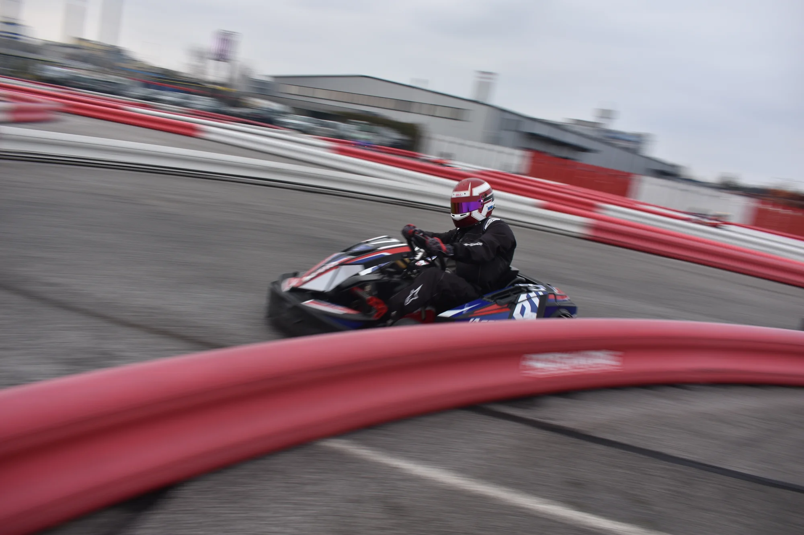
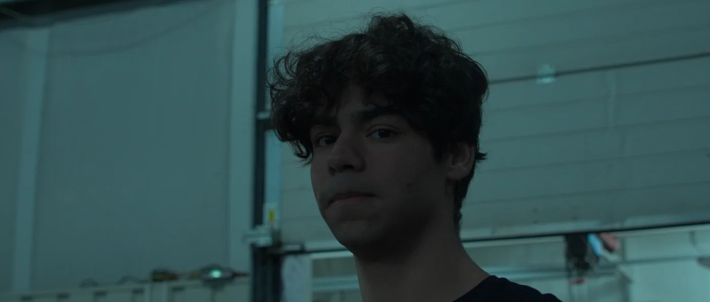

Prvý slovenský
motokárový film
Nezávislý film.
Skutočná vášeň.
Príbeh sa nekončí v poslednej zákrute. Slovensko / Krátkometrážny film
Na návrat potrebuješ
viac než rýchlosť.
Príbeh pretekára, ktorý sa vracia na trať.
A tímu, ktorý sa odvážil natočiť ho.
Posledné kolo.
Nový začiatok.
Kedysi pretekal o víťazstvo. Teraz bojuje o cestu späť.
The Final Lap sleduje vnútorný boj bývalého pretekára, ktorý sa pokúša vrátiť na vrchol motokárového sveta. Na ceste ho čakajú strata, prekážky aj súperenie. Predovšetkým však musí nájsť odvahu opäť sa postaviť na štart.
Krátkometrážny film spája energiu slovenského motoršportu s nadšením mladých filmárov. V autentickom prostredí motokárovej haly MAX60 vznikol príbeh, za ktorým stoja ľudia odhodlaní premeniť spoločný nápad na film.
- Formát
- Krátkometrážny hraný film
- Krajina
- Slovensko
- Prostredie
- Motokárový šport
- Uvedenie
- Premiéra sa pripravuje

Na trati rozhodujú sekundy.
V živote odvaha skúsiť to znova.
Jeden film.
Spoločná vášeň.
Herci, filmári a pretekári. Rozličné skúsenosti, ktoré sa stretli pri jednom príbehu. Spoznajte niekoľko tvárí The Final Lap.
Zábery z filmu
Bližšie k trati.
Ticho pred štartom. Napätie medzi súpermi.
Prvý pohľad do sveta The Final Lap.
Vybrané zábery / Kliknutím otvoríte galériu
Keď kamera
ešte beží.
Na trati, pri monitore aj v štúdiu. Pozrite sa na chvíle, z ktorých vznikal náš film — a na tím, ktorý ich premenil na zábery.
Aj vďaka vám
sme na trati.
Verili ste nášmu filmu ešte pred prvým premietaním. Na StartLabe ste nám pomohli prekonať pôvodný cieľ a posunúť The Final Lap bližšie k divákom.
Ďakujeme každému, kto prispel, zdieľal náš príbeh alebo nám držal palce. Vaša dôvera je súčasťou tohto filmu.
Pozrieť ukončenú kampaňSpolu až do cieľa.
Ľudia a partneri, ktorí sa stali súčasťou The Final Lap. Ďakujeme za podporu a spoluprácu.
Cieľová rovinka je pred nami
Uvidíme sa pri filme.
Film zatiaľ nebol uvedený.
Termín premiéry oznámime neskôr.